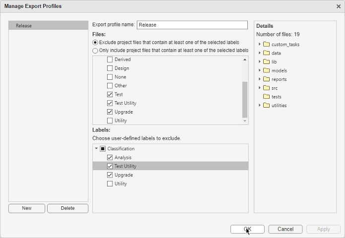

Share Projects
You can collaborate with others by sharing projects. You can also control which files you want to include in a shared project by using labels and an export profile. For more information, see Create an Export Profile.
This table describes the ways you can share a project.
| Way to Share Projects | Procedure |
|---|---|
Archive your project in a single file. | You can archive your project into a
To archive a project:
You can now share the archive file the way you would any other file. |
Package your project as a MATLAB toolbox. | You can create a toolbox from your project and share the toolbox with collaborators. For more information, see Create and Share Toolboxes. |
| Make your project available on GitHub®. | You can share a project by making it publicly or privately available on GitHub. You must first have a GitHub account. Sharing a project on GitHub adds Git™ source control to the project. If your project is already under source control, sharing replaces the source control configuration with Git, and GitHub becomes the remote repository linked to your project. To share a project on GitHub:
To view the URL for the remote repository, on the Project tab, in the white space of the Project panel, right-click and select Source Control > View Details. |
| Collaborate using source control. | You can host a project in a remote Git or SVN repository and collaborate with others similar to any other working source control folders. For more information, see Share Git Repository to Remote and Collaborate Using Git in MATLAB. |
Create a Simulink® template from your project. | Use templates to create and reuse a standard project structure. Simulink Templates help you make consistent projects across teams. For more information, see Create Templates for Standard Project Settings (Simulink). |
| Create an FMU file from Simulink models in your project. | To enable tool-coupling co-simulation with other simulation software, you can create an FMU file from Simulink models in your project. For more information, see Export a Model as a Tool-Coupling FMU (Simulink). |
Before sharing a project with others, it can be useful to examine the required add-ons for your project by performing a dependency analysis. For more information, see Find Required Products and Add-Ons.
Create an Export Profile
If you want to share a subset of your project files, create an export profile. An export profile allows you to exclude or only include files with particular labels. For more information about creating labels and adding them to project files, see Create and Manage Labels and Add Labels to Project Files.
To create an export profile:
On the Project tab, click Share > Manage Export Profiles.
To create a new export profile, click New and specify the export profile name.
In the Files pane, choose if you want to exclude or include files based on their labels from the final project archive.
If the files you need to share are only a small subset of a large project, choose the include option.
In the Files pane, select the labels for the files you want to exclude or include.
You can also exclude user-defined labels from the exported project. In the Labels pane, select the custom labels you do not want to export.
Click OK.
Note
Export profiles do not apply changes to referenced projects. When you share your project, MATLAB exports the entire referenced projects.
